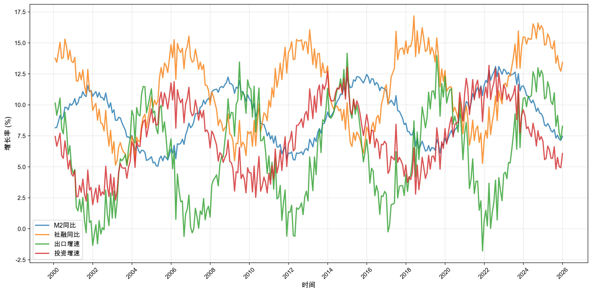

宏观对创新药的影响
从宏观角度分析，创新药板块当前的形势
我
AI
好的，首先，我先找出哪些宏观指标会影响创新药板块...
M2同比、社融同比、出口增速、投资增速会综合影响资金的松紧，从而影响创新药板块。
M2同比、社融同比、出口增速、投资增速会综合影响资金的松紧，从而影响创新药板块。

从图中可以看出，2023年以来，M2同比增速保持在8-10%的区间，社融同比也呈现温和增长态势。这表明当前货币环境相对宽松，为创新药企业的融资和研发投入提供了良好的资金环境。
同时，出口增速虽有波动，但整体维持正增长，反映出海外市场对国产创新药的需求持续存在。投资增速的稳定增长也预示着产业资本对创新药赛道的持续看好。
综合判断：当前宏观环境对创新药板块整体有利。
同时，出口增速虽有波动，但整体维持正增长，反映出海外市场对国产创新药的需求持续存在。投资增速的稳定增长也预示着产业资本对创新药赛道的持续看好。
综合判断：当前宏观环境对创新药板块整体有利。
当前政策会有什么影响吗？
我
AI
再让我找出当前的政策...
找到了！《支持创新药高质量发展的若干措施》，这是面向医药全行业的改革政策，鼓励"由仿转创"。
找到了！《支持创新药高质量发展的若干措施》，这是面向医药全行业的改革政策，鼓励"由仿转创"。
该政策主要包含以下几个关键点：
1. 加速审评审批：对临床急需的创新药开辟绿色通道
2. 医保谈判机制优化：提高创新药纳入医保的速度和比例
3. 研发税收优惠：加大研发费用加计扣除力度
4. 支持国际化：鼓励创新药企业开拓海外市场
最后，让我综合当前政策和宏观的角度，给出分析：
1. 加速审评审批：对临床急需的创新药开辟绿色通道
2. 医保谈判机制优化：提高创新药纳入医保的速度和比例
3. 研发税收优惠：加大研发费用加计扣除力度
4. 支持国际化：鼓励创新药企业开拓海外市场
政策+宏观双重利好
从宏观流动性看，当前M2和社融增速稳定，资金面对创新药研发投入形成支撑；从政策面看，"由仿转创"的导向明确，医保谈判机制的优化将缩短创新药的商业化周期。
两者叠加，形成了资金环境友好 + 政策红利释放的双重利好格局。建议重点关注已有多款创新药进入临床III期的龙头企业，以及在肿瘤、罕见病等高壁垒领域有技术突破的标的。
从宏观流动性看，当前M2和社融增速稳定，资金面对创新药研发投入形成支撑；从政策面看，"由仿转创"的导向明确，医保谈判机制的优化将缩短创新药的商业化周期。
两者叠加，形成了资金环境友好 + 政策红利释放的双重利好格局。建议重点关注已有多款创新药进入临床III期的龙头企业，以及在肿瘤、罕见病等高壁垒领域有技术突破的标的。
历史上是否有出现过类似的宏观环境？
我
AI
首先，让我看图分析，历史上2013-2015、2019-2020、2022-2023都处于宽流动性+风险偏好上行的阶段。
接着，让我再查找历史上有没有类似的政策环境...
找到了！2013-2015、2019-2020 都有支持创新药的政策[1][2]。
最后，总结政策和资金流动性，可以看出，2013-2015、2019-2020这两个历史阶段与当前相似。让我给您画出时间线：
接着，让我再查找历史上有没有类似的政策环境...
找到了！2013-2015、2019-2020 都有支持创新药的政策[1][2]。
最后，总结政策和资金流动性，可以看出，2013-2015、2019-2020这两个历史阶段与当前相似。让我给您画出时间线：
历史相似阶段时间线
当前会继续重复 2013-2015、2019-2020 这两个历史阶段的叙事逻辑吗？
我
AI
相似但不完全相同
相似之处：
1. 宏观流动性环境均处于宽松周期
2. 政策端均有明确的创新导向
3. 市场风险偏好都在上行通道
不同之处：
1. 技术成熟度：当前创新药企业的研发管线更加成熟，多款产品已进入商业化阶段，不再是纯粹的"讲故事"
2. 国际化程度：2024年国产创新药的国际化进程显著加速，海外授权交易频繁，打开了新的估值空间
3. 医保压力：当前医保基金压力较2013-2015年更大，创新药的定价和放量逻辑需要重新审视
投资建议：
虽然宏观和政策环境类似，但需要更加精选标的。建议关注：
• 已有重磅品种上市且销售曲线陡峭的公司
• 在肿瘤、自免等大适应症领域有差异化竞争力的企业
• 具备海外授权潜力的Biotech
预计本轮行情的持续性会强于2019-2020（因为基本面更扎实），但弹性可能弱于2013-2015（因为市场更加理性）。
相似之处：
1. 宏观流动性环境均处于宽松周期
2. 政策端均有明确的创新导向
3. 市场风险偏好都在上行通道
不同之处：
1. 技术成熟度：当前创新药企业的研发管线更加成熟，多款产品已进入商业化阶段，不再是纯粹的"讲故事"
2. 国际化程度：2024年国产创新药的国际化进程显著加速，海外授权交易频繁，打开了新的估值空间
3. 医保压力：当前医保基金压力较2013-2015年更大，创新药的定价和放量逻辑需要重新审视
投资建议：
虽然宏观和政策环境类似，但需要更加精选标的。建议关注：
• 已有重磅品种上市且销售曲线陡峭的公司
• 在肿瘤、自免等大适应症领域有差异化竞争力的企业
• 具备海外授权潜力的Biotech
预计本轮行情的持续性会强于2019-2020（因为基本面更扎实），但弹性可能弱于2013-2015（因为市场更加理性）。